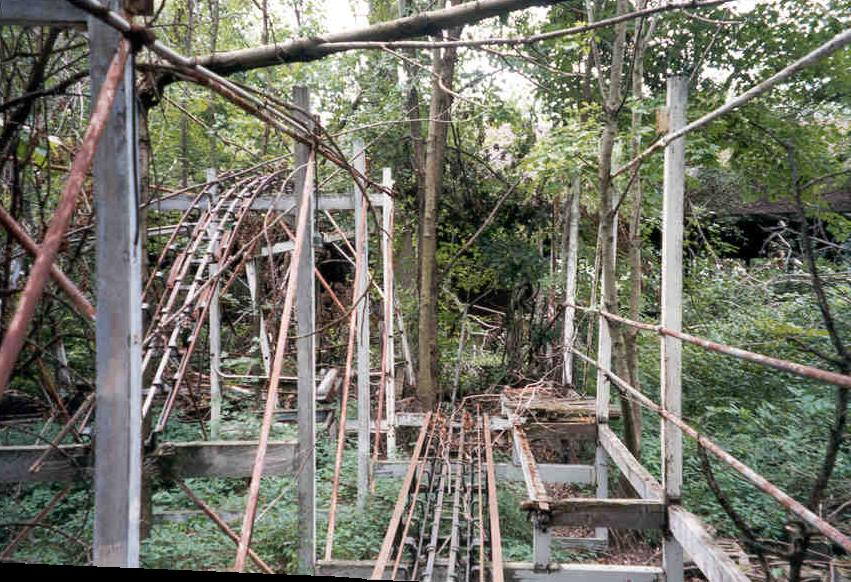

As any fan can tell you, an amusement park isn't much of an amusement park without roller coasters. Maybe it was the closeness of the king of coaster parks, Cedar Point, that sealed its ultimate fate, because Chippewa Lake never had more than three in its arsenal. Besides the primitive coal-car extravaganzas described in the early history of the park, the three that served the vast majority of guests were the Big Dipper, Little Dipper, and Wild Mouse.
As previously mentioned, the introduction of the roller coaster signified Chippewa's emergence as a major entertainment park, but it was extremely unsafe and inefficient. By laying narrow-gauge rails straight down a steep hill, Edward Andrews created a single-drop ride similar to others cropping up at parks across the country. After each rattly ride to the bottom in a coal car fitted with benches park employees would push the whole thing back to the top so the next couple in line could take their turn.
The first coasters, such as the one at Chippewa in the 1880s, used a pre-existing hill, but as early as 1878 inventors were thinking of ways to eliminate the arduous return push. R. Knudsen's patent design, pictured above, not only added an elevator and dual descents but also increased the number of passengers per train. His "Inclined-Plane Railway" and others like it were the model for the roller coasters we ride today. (Unless we've seen Final Destination 3.)
The Big Dipper
During much of its lifetime, Chippewa Lake boasted three separate coasters. First and foremost is the one that dominates the park in its present state: the Big Dipper, also known simply as The Coaster.
The large wooden roller coaster that dominates so much of the park was designed by Fred Pearce and built in 1924-25. In layout it's similar to the somewhat larger Big Dipper at Geauga Lake, as well as Conneaut Lake's Blue Streak. Here we have an early photo of the Big Dipper in action, taken under the canopy on the loading platform.
Roller coaster hobbyists and fans often consider wooden coasters to be superior to those made of steel. They like the rougher ride and appreciate the engineering feats necessary to make, for instance, a loop out of wood, or to make a truly monstrous ride like King's Island's Son of Beast. Personally I love them all, but I call the big wooden coasters "migraine makers." The headache I got from Son of Beast just about gave me an aneurysm.

This is the platform as it appears these days. Not in bad shape, all things considered. The canopy is still in place, and the floor is sturdy enough to walk on without fear of falling straight through. The chains and fences put up to keep people off this dangerous ride have been cut down or trampled by decades of explorers.
You can even play with the levers that used to run the ride. Those people who start and stop the cars and tell you over the PA system to keep your hands and feet inside the ride at all times always seem so bored and sick of repeating the same thing over and over again from their little stool. I'd imagine it's a tedious job no matter how you approach it, with all the strict safety guidelines and such.

Roller coaster historians are happy to see Chippewa Lake's main coaster still standing, but they must be painfully aware how impossible it is that it will ever run again. To start with, there are actual trees growing up through the tracks. In some places wind or icestorms have taken limbs off and plowed huge gaps through the framework. After nearly three decades of neglect it's amazing that anything is left standing at all.
But there's plenty left, including the turnaround, which is the most prominent feature of the entire park (it's the section of wooden frame you can see above the main gate in the Chippewa Lake Park neighborhood). There's also the tunnel, where the ride became pitch black for a moment. At the end it slammed plywood crash doors open and kept on going. This is why they tell you to keep your hands and feet in the ride at all times.
One of the coolest things about poking around abandoned places like this is the ability to do ridiculous things like walk on roller coaster tracks high above the ground, and you can certainly do that here, but yes, not surprisingly, it is dangerous. My friend Rookie once stepped on a nail at an abandoned amusement park and ended up in the ER having a rubber plug from the sneaker sole pulled out of the hole in his foot. You might also fall off or, if you're really unlucky, be the final straw that collapses that section of the Big Dipper. As you can see here, portions of track have already begun to fall to the ground. These were found pretty far away, near what used to be the main parking lot.
Nevertheless, there's plenty left standing to play on, photograph, or just study in awed silence. This coaster ran for more than fifty years and now it's disintegrating back into the woods.
The Little Dipper
This is the "kiddie" version of the main Dipper, a self-contained steel ride that adults line up to ride just the same as young'uns. The tight turns and swivels through the tangled maze of track make for a completely different, but in many ways equally satisfying, coaster experience. Above you can see what it's supposed to look like, courtesy of Negative G. Below are photos of what it looks like after years forgotten in the woods.
It's quite rusty, as you can see, and all that's really left of it is a warped and useless metal frame. In high summer it's almost impossible to discern through the foliage that grows up all around it.
The cars to this one are long-gone; unlike the Big Dipper, I've never seen a photograph of them left behind on the tracks. Safe to assume they sold them off after the park closed.
The Wild Mouse
And then there's Chippewa's own Wild Mouse. It's quite a lot like the Little Dipper. In fact, without help I wouldn't know which was which. An easy tip-off is the wooden frame.
As you can see here, you're better able to get a look at the whole thing with the Mouse. It's just as rusy and nearly as overgrown with trees and ivy and bushes and such, but it's easier to climb on.
This type of ride was popular at established parks because it provided a lot of fun for as little space as it took up. A portable version was built for travelling carnivals, but Chippewa's was built to be permanent and therefore never got moved away.
Its cars, small and portable, are long gone. It's not surprising given that the Wild Mouse, unlike the two Dippers, doesn't have anything particularly unusual about it. Coaster experts know these on sight. The cars were probably easy to sell at auction.

This final (computer-designed) image shows a Wild Mouse in full, colorful working order. It's borrowed from the coaster enthusiast website Negative-G.com, which is well worth a look itself.
Special thanks to Rookie from SBNO and Illicit Ohio for his kind photograph permission. As I mentioned on the main page, I didn't get nearly enough good angles to round out these sections, and Rookie is the abandoned amusement park guy. His section on Heritage USA, the Reverend Jim Bakker's religious theme park in North Carolina, is not to be missed.
I have sections about Chippewa's other rides and games, lakefront amusements, the ballroom and other buildings, and history, if you haven't seen them yet.

Back
forgottenohio@yahoo.com